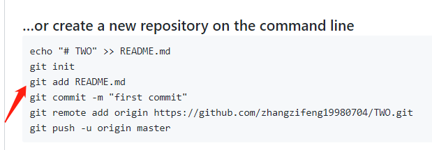
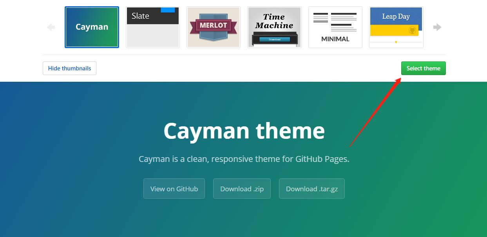

第一步：注册Github
第二步：创建仓库
第三步：第一次使用Git时，需要输入GitHub的名字和邮箱
第四步：打开Git Bash克隆Github上的仓库到本地，命令：git clone (项目上的地址)

第五步：进入克隆完之后的文件夹里按顺序在命令行上创建新的存储库 。需要上传文件的命令：git add 需要上传的文件。再输入第四条第五条第六条命令
第六步：点Settings找到GitHub Pages，选择一个主题.
第七步：点击GitHub窗口的网站即可看到网站.